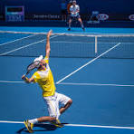

Nuevo récord histórico en la maratónica jornada del Grand Slam

La pista central presenció uno de los encuentros más épicos de los últimos años. En un duelo que se extendió por más de cuatro horas y media, ambos tenistas mostraron un nivel físico y mental extraordinario en los cuartos de final del torneo.
Un quinto set para el recuerdo
Tras empatar a dos sets por bando, el quinto y definitivo parcial se resolvió en un dramático súper tie-break de infarto (12-10). La potencia en el servicio y la solidez desde la línea de fondo fueron la clave para sellar el pase a semifinales.
Datos clave del partido
- Duración total: 4 horas y 38 minutos.
- Aces conectados: 28 servicios directos.
- Puntos ganados con el primer saque: 82%.
- Break points salvados: 9 de 11 encarados.
Con este triunfo, el ganador avanza a su tercera semifinal consecutiva de la temporada y asegura escalar posiciones en el ranking mundial ATP.